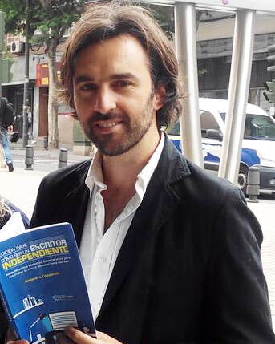

Empecé como copywriter en una agencia de publicidad. Al poco tiempo
me cambié "al lado del cliente" y trabajé 5 años como Encargado de Marketing.
Luego llegué a España y trabajé en una agencia de Relaciones Públicas y me
especialicé en Marketing Online.
Actualmente trabajo en una sala de conciertos como responsable de Marketing y
tengo un proyecto de asesoría a escritores independientes para ayudarlos a
publicar y promocionar sus libros. También he publicado 2 libros.

Alejandro Capparelli presentando el libro "Edición indie.
Cómo ser un escritor independiente".
Me apasiona la tecnología y es el sector en el que quiero trabajar, por lo que
empecé un bootcamp en desarrollo web para ser full stack developer.